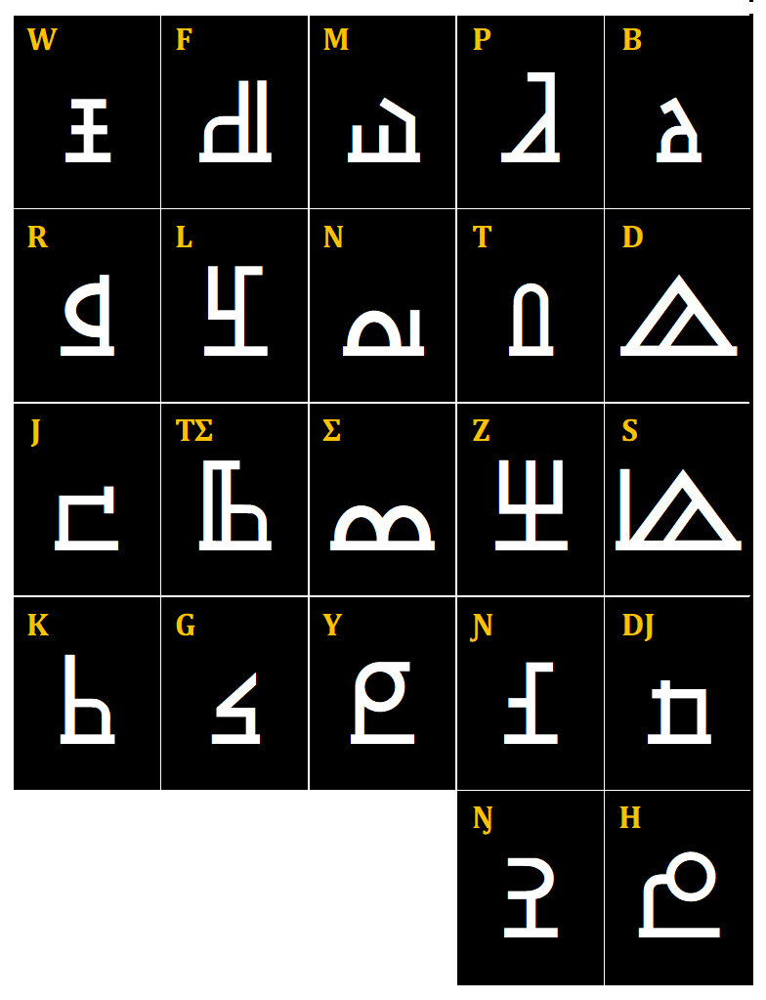
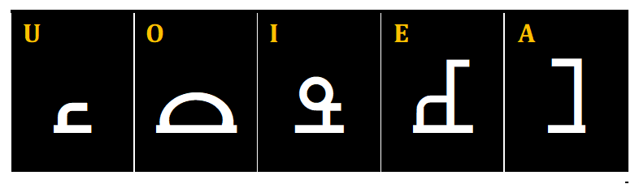
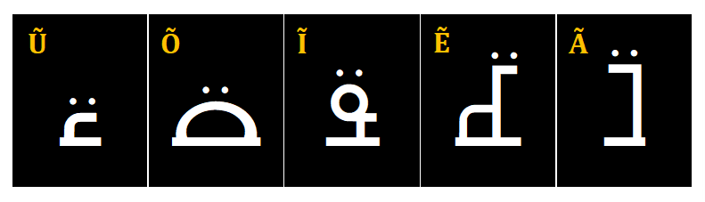
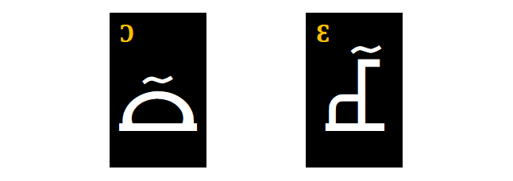
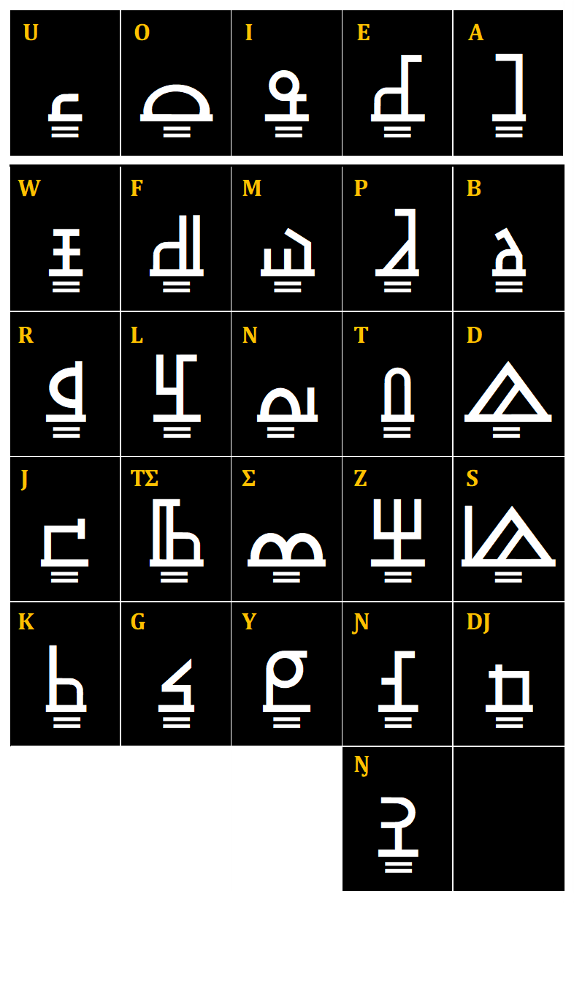
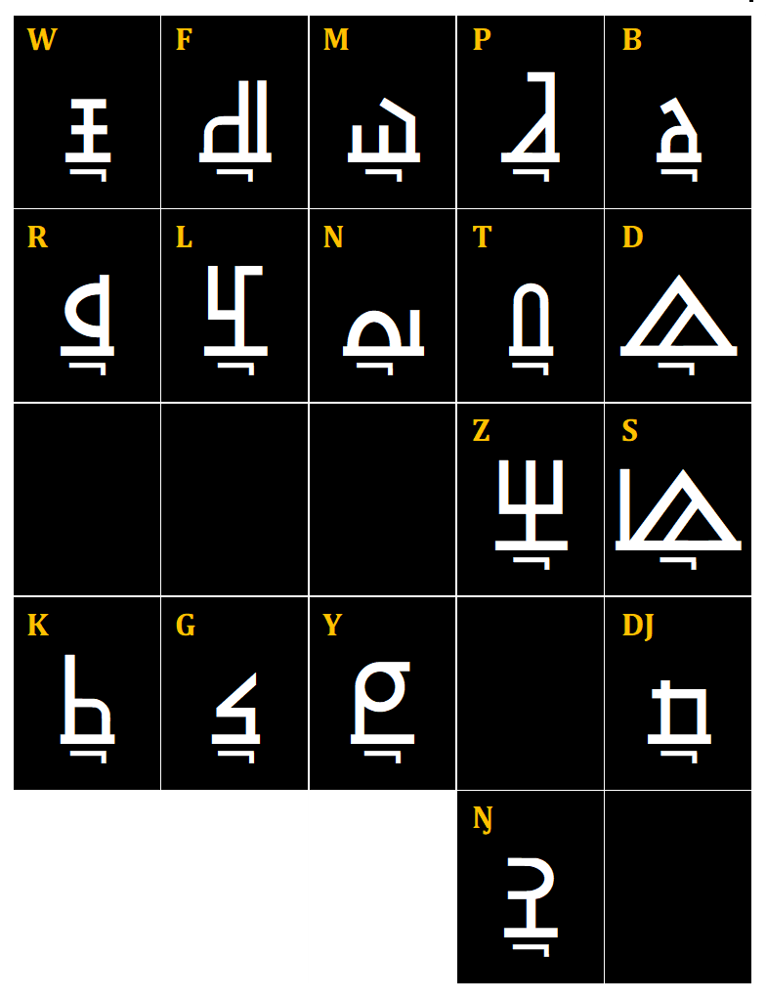

Les briques du système
Contrairement aux alphabets empruntés qui nécessitent de combiner plusieurs lettres pour transcrire un seul son songhay, AYNEHA attribue à chaque son consonantique un caractère propre et distinct, sans détour par l'alphabet latin.
- Consonnes labiales & dentales : B, P, M, F, W, D, T, N, L, R
- Consonnes sifflantes & palatales : S, Z, Ʃ (sh), TƩ (tch), J, DJ, Ɲ, Y
- Consonnes vélaires & profondes : G, K, H, Ŋ

Un caractère = un son : plus d'hésitations d'orthographe ni de doubles lettres superflues. Les formes ont été conçues pour s'aligner naturellement entre elles, offrant une grande fluidité à la lecture comme à l'écriture manuscrite.
Cinq sons fondamentaux
En songhay, la clarté des voyelles est essentielle pour la compréhension des mots et le sens des phrases. L'alphabet AYNEHA retient 5 voyelles de base.

| Voyelle | Exemple | Sens |
|---|---|---|
| A | adadu | mesure |
| E | naaney | confiance |
| I | idjina | premier |
| O | sooje | militaire |
| U (se prononce « ou ») | nuna | feu |
Au-delà des voyelles de base
La langue songhay ne se limite pas à cinq sons vocaliques simples : elle distingue des nuances de nasalisation et d'ouverture essentielles au sens des mots. AYNEHA intègre ainsi 7 variantes vocaliques : 5 voyelles nasales et 2 voyelles ouvertes.
5 voyelles nasales
Obtenues en plaçant l'accent nasalisé (deux points couchés) au-dessus de chacune des cinq voyelles de base.

2 voyelles ouvertes
Obtenues en plaçant l'accent ouvert (un tilde) au-dessus des seules voyelles E et O.

Compter en AYNEHA
AYNEHA comprend un système numérique complet, distinct de la numération arabe usuelle, composé de dix glyphes correspondant aux chiffres 0 à 9. Comme pour les lettres, l'écriture et la lecture des chiffres suivent un sens droite-à-gauche. Ce système est utilisé notamment dans la calculatrice web et l'application Android AYNEHA Calc.

Un système de marques précis
AYNEHA s'appuie sur quatre accents, chacun avec une fonction phonétique précise :
- L'accent nasalisé - deux points couchés au-dessus de la voyelle.
- L'accent ouvert - un tilde au-dessus des voyelles E et O uniquement.
- L'accent double (gémination) - deux barres horizontales sous la lettre, pour doubler ou allonger la prononciation d'une voyelle ou d'une consonne. Il s'applique à toutes les lettres, à l'exception du H.
- L'accent muet - un petit « L » renversé sous la consonne, pour signaler une consonne directement suivie d'une autre consonne, ou une consonne en fin de mot non suivie d'une voyelle. Il ne s'applique pas aux consonnes Ʃ, TƩ, J, Ɲ, H.


Ce dernier point illustre une cohérence phonétique fine du système : ces cinq consonnes ont une nature articulatoire incompatible avec la mutité, tout comme les voyelles n'ont, par nature, aucune forme muette.